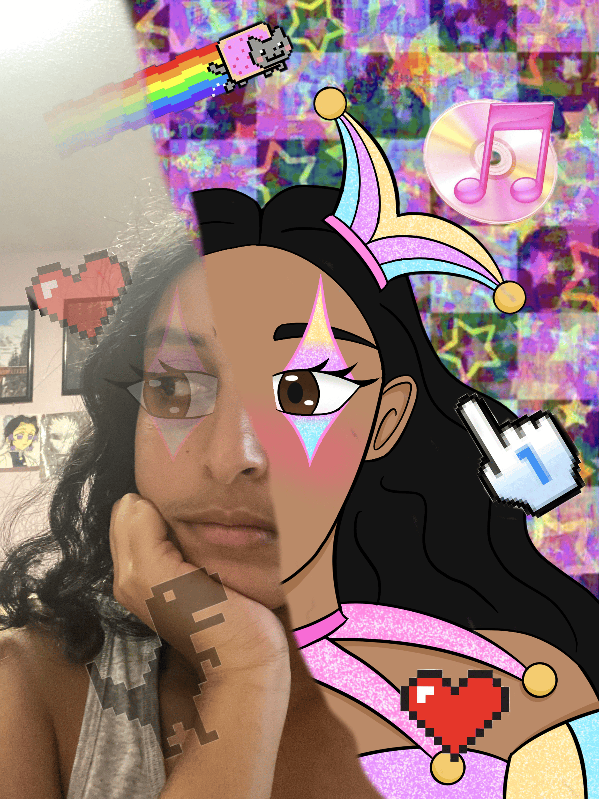

Digital Identity photoshop project.
For this project I made a portrait of myself detailing my real life persona and digital persona. For the digital persona I made a portrait of myself on procreate and I decided to make a digital glitchy background for that half of the piece. As for the real life piece I did add some digital pieces but I made them more faded to represent that even in real life your digital persona can overlap with you.